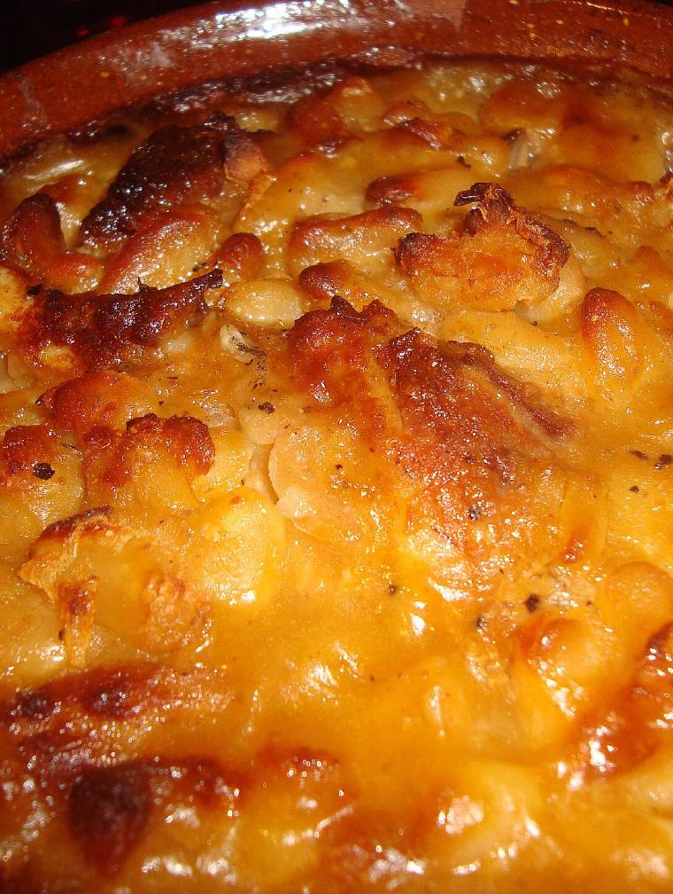

Cuisine française

Cuisine française
Cassoulet de Castelnaudary
Préparation : 45 min
Repos : 12 h
Cuisson : 5 h
Ingrédients (pour 4 personnes)
- 400 g de haricots lingots secs
- 2 cuisses de canard confites
- 320 g de saucisse de Toulouse
- 200 g de jarret, épaule ou poitrine de porc
- 250 g de couenne de porc
- 70 g de lard salé
- 4 gousses d’ail
- 1 carcasse de volaille ou quelques os de porc
- 1 oignon
- 1 carotte
- sel, poivre
Quantités adaptées. Les temps de cuisson ne sont pas recalculés.
- La veille, faire tremper les haricots. Le lendemain, les blanchir 5 minutes et jeter l’eau.
- Cuire 1 heure couennes, os, oignon et carotte dans 3 litres d’eau salée et poivrée. Filtrer, garder les couennes.
- Cuire les haricots environ 1 heure dans ce bouillon : souples mais entiers. Y ajouter l’ail broyé avec le lard.
- Dégraisser le confit, puis dorer saucisse et porc dans sa graisse.
- Dans la cassole, étager couennes, un tiers des haricots, viandes, reste des haricots, puis saucisse affleurante. Couvrir juste de bouillon.
- Cuire 2 à 3 heures à 150 °C, en enfonçant plusieurs fois la croûte et en rajoutant du bouillon.
AstuceEncore meilleur réchauffé le lendemain, 1 h 30 à 150 °C. On ne le remue pas.
D’après la recette de Castelnaudary Tourisme. Texte reformulé, quantité d’ail précisée.